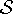
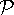
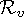

Formal semantics
This appendix presents a non-normative, formal, operational semantics for Scheme, that is based on an earlier semantics [18]. It does not cover the entire language. The notable missing features are the macro system, I/O, and the numerical tower. The precise list of features included is given in section A.2.
The core of the specification is a single-step term rewriting relation that indicates how an (abstract) machine behaves. In general, the report is not a complete specification, giving implementations freedom to behave differently, typically to allow optimizations. This underspecification shows up in two ways in the semantics.
The first is reduction rules that reduce to special “unknown: string” states (where the string provides a description of the unknown state). The intention is that rules that reduce to such states can be replaced with arbitrary reduction rules. The precise specification of how to replace those rules is given in section A.12.
The other is that the single-step relation relates one program to
multiple different programs, each corresponding to a legal transition
that an abstract machine might take. Accordingly we use the transitive
closure of the single step relation →* to define the
semantics, , as a function from programs ()
to sets of observable results (![[r6rs-Z-G-D-12.gif]](r6rs-Z-G-D-12.gif) ):
):
|
![[r6rs-Z-G-D-15.gif]](r6rs-Z-G-D-15.gif) turns an answer () from the semantics into an observable result. Roughly, is the identity function on simple base values, and returns a special tag for more complex values, like procedure and pairs.
turns an answer () from the semantics into an observable result. Roughly, is the identity function on simple base values, and returns a special tag for more complex values, like procedure and pairs.So, an implementation conforms to the semantics if, for every program , the implementation produces one of the results in () or, if the implementation loops forever, then there is an infinite reduction sequence starting at , assuming that the reduction relation → has been adjusted to replace the unknown: states.
The precise definitions of , , , and are also given in section A.2.
To help understand the semantics and how it behaves, we have implemented it in PLT Redex. The implementation is available at the report’s website: http://www.r6rs.org/. All of the reduction rules and the metafunctions shown in the figures in this semantics were generated automatically from the source code.
A.1 Background
We assume the reader has a basic familiarity with context-sensitive reduction semantics. Readers unfamiliar with this system may wish to consult Felleisen and Flatt’s monograph [10] or Wright and Felleisen [29] for a thorough introduction, including the relevant technical background, or an introduction to PLT Redex [19] for a somewhat lighter one.
As a rough guide, we define the operational semantics of a language via a relation on program terms, where the relation corresponds to a single step of an abstract machine. The relation is defined using evaluation contexts, namely terms with a distinguished place in them, called holes, where the next step of evaluation occurs. We say that a term e decomposes into an evaluation context E and another term e′ if e is the same as E but with the hole replaced by e′. We write E[e′] to indicate the term obtained by replacing the hole in E with e′.
For example, assuming that we have defined a grammar containing non-terminals for evaluation contexts (E), expressions (e), variables (x), and values (v), we would write:
![[r6rs-Z-G-6.gif]](r6rs-Z-G-6.gif)
to define the βv rewriting rule (as a part of the → single step relation). We use the names of the non-terminals (possibly with subscripts) in a rewriting rule to restrict the application of the rule, so it applies only when some term produced by that grammar appears in the corresponding position in the term. If the same non-terminal with an identical subscript appears multiple times, the rule only applies when the corresponding terms are structurally identical (nonterminals without subscripts are not constrained to match each other). Thus, the occurrence of E1 on both the left-hand and right-hand side of the rule above means that the context of the application expression does not change when using this rule. The ellipses are a form of Kleene star, meaning that zero or more occurrences of terms matching the pattern proceeding the ellipsis may appear in place of the the ellipsis and the pattern preceding it. We use the notation { x1 ··· mapsto v1 ··· } e1 for capture-avoiding substitution; in this case it means that each x1 is replaced with the corresponding v1 in e1. Finally, we write side-conditions in parentheses beside a rule; the side-condition in the above rule indicates that the number of x1s must be the same as the number of v1s. Sometimes we use equality in the side-conditions; when we do it merely means simple term equality, i.e., the two terms must have the same syntactic shape.
| ||
| Figure 2: Grammar for programs and observables | ||
![[r6rs-Z-G-7.gif]](r6rs-Z-G-7.gif)
Making the evaluation context E explicit in the rule allows us to define relations that manipulate their context. As a simple example, we can add another rule that signals a violation when a procedure is applied to the wrong number of arguments by discarding the evaluation context on the right-hand side of a rule:
![[r6rs-Z-G-8.gif]](r6rs-Z-G-8.gif)
Later we take advantage of the explicit evaluation context in more sophisticated ways.
A.2 Grammar
|
| ||
| Figure 2: Grammar for evaluation contexts | ||
![[r6rs-Z-G-9.gif]](r6rs-Z-G-9.gif)
Figure 2 shows the grammar for the subset of the
report this semantics models. Non-terminals are written in
italics or in a calligraphic font (
, , and ) and literals are
written in a monospaced font.
The non-terminal represents possible program states. The first alternative is a program with a store and an expression. The second alternative is an uncaught exception, and the third is used to indicate a place where the model does not completely specify the behavior of the primitives it models (see section A.12 for details of those situations). The non-terminal represents a final result of a program. It is just like except that expression has been reduced to some sequence of values.
The and non-terminals specify the observable results of a program. Each is either a sequence of values that correspond to the values produced by the program that terminates normally, or a tag indicating an uncaught exception was raised, or unknown if the program encounters a situation the semantics does not cover. The non-terminal specifies what the observable results are for a particular value: a pair, the empty list, a symbol, a self-quoting value (#t, #f, and numbers), a condition, or a procedure.
The sf non-terminal generates individual elements of the store. The store holds all of the mutable state of a program. It is explained in more detail along with the rules that manipulate it.
Expressions (mathites) include quoted data, begin expressions, begin0 expressions1, application expressions, if expressions, set! expressions, variables, non-procedure values (nonproc), primitive procedures (pproc), lambda expressions, letrec and letrec* expressions.
The last few expression forms are only generated for intermediate states (dw for dynamic-wind, throw for continuations, unspecified for the result of the assignment operators, handlers for exception handlers, and l! and reinit for letrec), and should not appear in an initial program. Their use is described in the relevant sections of this appendix.
The f non-terminal describes the formals for lambda expressions. (The dot is used instead of a period for procedures that accept an arbitrary number of arguments, in order to avoid meta-circular confusion in our PLT Redex model.)
The s non-terminal covers all datums, which can be either non-empty sequences (seq), the empty sequence, self-quoting values (sqv), or symbols. Non-empty sequences are either just a sequence of datums, or they are terminated with a dot followed by either a symbol or a self-quoting value. Finally the self-quoting values are numbers and the booleans #t and #f.
The p non-terminal represents programs that have no quoted data. Most of the reduction rules rewrite p to p, rather than to , since quoted data is first rewritten into calls to the list construction functions before ordinary evaluation proceeds. In parallel to es, e represents expressions that have no quoted expressions.
| ||||
| Figure 3: Quote | ||||
![[r6rs-Z-G-11.gif]](r6rs-Z-G-11.gif)
![[r6rs-Z-G-12.gif]](r6rs-Z-G-12.gif)
The values (v) are divided into four categories:
Non-procedures (nonproc) include pair pointers (pp), the empty list (null), symbols, self-quoting values (sqv), and conditions. Conditions represent the report’s condition values, but here just contain a message and are otherwise inert.
User procedures ((lambda f e e ···)) include multi-arity lambda expressions and lambda expressions with dotted parameter lists,
Primitive procedures (pproc) include
arithmetic procedures (aproc): +, -, /, and *,
procedures of one argument (proc1): null?, pair?, car, cdr, call/cc, procedure?, condition?, unspecified?, raise, and raise-continuable,
procedures of two arguments (proc2): cons, set-car!, set-cdr!, eqv?, and call-with-values,
as well as list, dynamic-wind, apply, values, and with-exception-handler.
Finally, continuations are represented as throw expressions whose body consists of the context where the continuation was grabbed.
The next three set of non-terminals in figure 2 represent pairs (pp), which are divided into immutable pairs (ip) and mutable pairs (mp). The final set of non-terminals in figure 2, sym, x, and n represent symbols, variables, and numbers respectively. The non-terminals ip, mp, and sym are all assumed to all be disjoint. Additionally, the variables x are assumed not to include any keywords or primitive operations, so any program variables whose names coincide with them must be renamed before the semantics can give the meaning of that program.
![[r6rs-Z-G-13.gif]](r6rs-Z-G-13.gif)
The set of non-terminals for evaluation contexts is shown in figure 2. The P non-terminal controls where evaluation happens in a program that does not contain any quoted data. The E and F evaluation contexts are for expressions. They are factored in that manner so that the PG, G, and H evaluation contexts can re-use F and have fine-grained control over the context to support exceptions and dynamic-wind. The starred and circled variants, E∗, Eo, F∗, and Fo dictate where a single value is promoted to multiple values and where multiple values are demoted to a single value. The U context is used to manage the report’s underspecification of the results of set!, set-car!, and set-cdr! (see section A.12 for details). Finally, the S context is where quoted expressions can be simplified. The precise use of the evaluation contexts is explained along with the relevant rules.
To convert the answers () of the semantics into observable results, we use these two functions:
![[r6rs-Z-G-15.gif]](r6rs-Z-G-15.gif)
They eliminate the store, and replace complex values with simple tags that indicate only the kind of value that was produced or, if no values were produced, indicates that either an uncaught exception was raised, or that the program reached a state that is not specified by the semantics.
A.3 Quote
The first reduction rules that apply to any program is the rules in figure 3 that eliminate quoted expressions. The first two rules erase the quote for quoted expressions that do not introduce any pairs. The last two rules lift quoted datums to the top of the expression so they are evaluated only once, and turn the datums into calls to either cons or consi, via the metafunctions mathscrQi and mathscrQm.
Note that the left-hand side of the [6qcons] and [6qconsi] rules are identical, meaning that if one rule applies to a term, so does the other rule. Accordingly, a quoted expression may be lifted out into a sequence of cons expressions, which create mutable pairs, or into a sequence of consi expressions, which create immutable pairs (see section A.7 for the rules on how that happens).
These rules apply before any other because of the contexts in which they, and all of the other rules, apply. In particular, these rule applies in the S context. Figure 2 shows that the S context allows this reduction to apply in any subexpression of an e, as long as all of the subexpressions to the left have no quoted expressions in them, although expressions to the right may have quoted expressions. Accordingly, this rule applies once for each quoted expression in the program, moving out to the beginning of the program. The rest of the rules apply in contexts that do not contain any quoted expressions, ensuring that these rules convert all quoted data into lists before those rules apply.
Although the identifier qp does not have a subscript, the semantics of PLT Redex’s “fresh” declaration takes special care to ensures that the qp on the right-hand side of the rule is indeed the same as the one in the side-condition.
![[r6rs-Z-G-16.gif]](r6rs-Z-G-16.gif)
A.4 Multiple values
The basic strategy for multiple values is to add a rule that demotes ( values v) to v and another rule that promotes v to ( values v). If we allowed these rules to apply in an arbitrary evaluation context, however, we would get infinite reduction sequences of endless alternation between promotion and demotion. So, the semantics allows demotion only in a context expecting a single value and allows promotion only in a context expecting multiple values. We obtain this behavior with a small extension to the Felleisen-Hieb framework (also present in the operational model for R5RS [17]). We extend the notation so that holes have names (written with a subscript), and the context-matching syntax may also demand a hole of a particular name (also written with a subscript, for instance E[e]∗). The extension allows us to give different names to the holes in which multiple values are expected and those in which single values are expected, and structure the grammar of contexts accordingly.
To exploit this extension, we use three kinds of holes in the evaluation context grammar in figure 2. The ordinary hole [ ] appears where the usual kinds of evaluation can occur. The hole [ ]∗ appears in contexts that allow multiple values and [ ]o appears in contexts that expect a single value. Accordingly, the rule [6promote] only applies in [ ]∗ contexts, and [6demote] only applies in [ ]o contexts.
To see how the evaluation contexts are organized to ensure that promotion and demotion occur in the right places, consider the F, F∗ and Fo evaluation contexts. The F∗ and Fo evaluation contexts are just the same as F, except that they allow promotion to multiple values and demotion to a single value, respectively. So, the F evaluation context, rather than being defined in terms of itself, exploits F∗ and Fo to dictate where promotion and demotion can occur. For example, F can be ( if Fo e e) meaning that demotion from ( values v) to v can occur in the test of an if expression. Similarly, F can be ( begin F∗ e e ···) meaning that v can be promoted to ( values v) in the first subexpression of a begin.
In general, the promotion and demotion rules simplify the definitions of the other rules. For instance, the rule for if does not need to consider multiple values in its first subexpression. Similarly, the rule for begin does not need to consider the case of a single value as its first subexpression.
![[r6rs-Z-G-18.gif]](r6rs-Z-G-18.gif)
The other two rules in figure 4 handle call-with-values. The evaluation contexts for call-with-values (in the F non-terminal) allow evaluation in the body of a procedure that has been passed as the first argument to call-with-values, as long as the second argument has been reduced to a value. Once evaluation inside that procedure completes, it will produce multiple values (since it is an F∗ position), and the entire call-with-values expression reduces to an application of its second argument to those values, via the rule [6cwvd]. Finally, in the case that the first argument to call-with-values is a value, but is not of the form ( lambda () e), the rule [6cwvw] wraps it in a thunk to trigger evaluation.
A.5 Exceptions
The workhorses for the exception system are
| ( handlers proc ··· e) |
expressions and the G and PG evaluation contexts (shown in figure 2). The handlers expression records the active exception handlers (proc ···) in some expression (e). The intention is that only the nearest enclosing handlers expression is relevant to raised exceptions, and the G and PG evaluation contexts help achieve that goal. They are just like their counterparts E and P, except that handlers expressions cannot occur on the path to the hole, and the exception system rules take advantage of that context to find the closest enclosing handler.
To see how the contexts work together with handler expressions, consider the left-hand side of the [6xunee] rule in figure 5. It matches expressions that have a call to raise or raise-continuable (the non-terminal raise* matches both exception-raising procedures) in a PG evaluation context. Since the PG context does not contain any handlers expressions, this exception cannot be caught, so this expression reduces to a final state indicating the uncaught exception. The rule [6xuneh] also signals an uncaught exception, but it covers the case where a handlers expression has exhausted all of the handlers available to it. The rule applies to expressions that have a handlers expression (with no exception handlers) in an arbitrary evaluation context where a call to one of the exception-raising functions is nested in the handlers expression. The use of the G evaluation context ensures that there are no other handler expressions between this one and the raise.
The next two rules cover call to the procedure with-exception-handler. The [6xwh1] rule applies when there are no handler expressions. It constructs a new one and applies v2 as a thunk in the handler body. If there already is a handler expression, the [6xwhn] applies. It collects the current handlers and adds the new one into a new handlers expression and, as with the previous rule, invokes the second argument to with-exception-handlers.
The next two rules cover exceptions that are raised in the context of a handlers expression. If a continuable exception is raised, [6xrc] applies. It takes the most recently installed handler from the nearest enclosing handlers expression and applies it to the argument to raise-continuable, but in a context where the exception handlers do not include that latest handler. The [6xr] rule behaves similarly, except it raises a new exception if the handler returns. The new exception is created with the make-cond special form.
![[r6rs-Z-G-20.gif]](r6rs-Z-G-20.gif)
The make-cond special form is a stand-in for the report’s conditions. It does not evaluate its argument (note its absence from the E grammar in figure 2). That argument is just a literal string describing the context in which the exception was raised. The only operation on conditions is condition?, whose semantics are given by the two rules [6ct] and [6cf].
Finally, the rule [6xdone] drops a handlers expression when its body is fully evaluated, and the rule [6weherr] raises an exception when with-exception-handler is supplied with incorrect arguments.
A.6 Arithmetic and basic forms
This model does not include the report’s arithmetic, but does include an idealized form in order to make experimentation with other features and writing test suites for the model simpler. Figure 6 shows the reduction rules for the primitive procedures that implement addition, subtraction, multiplication, and division. They defer to their mathematical analogues. In addition, when the subtraction or divison operator are applied to no arguments, or when division receives a zero as a divisor, or when any of the arithmetic operations receive a non-number, an exception is raised.
The bottom half of figure 6 shows the rules for if, begin, and begin0. The relevant evaluation contexts are given by the F non-terminal.
The evaluation contexts for if only allow evaluation in its test expression. Once that is a value, the rules reduce an if expression to its consequent if the test is not #f, and to its alternative if it is #f.
The begin evaluation contexts allow evaluation in the first subexpression of a begin, but only if there are two or more subexpressions. In that case, once the first expression has been fully simplified, the reduction rules drop its value. If there is only a single subexpression, the begin itself is dropped.
Like the begin evaluation contexts, the begin0 evaluation contexts allow evaluation of the first subexpression of a begin0 expression when there are two or more subexpressions. The begin0 evaluation contexts also allow evaluation in the second subexpression of a begin0 expression, as long as the first subexpression has been fully simplified. The [6begin0n] rule for begin0 then drops a fully simplified second subexpression. Eventually, there is only a single expression in the begin0, at which point the [begin01] rule fires, and removes the begin0 expression.
A.7 Lists
The rules in figure 7 handle lists. The first two rules handle list by reducing it to a succession of calls to cons, followed by null.
The next two rules, [6cons] and [6consi], allocate new cons cells. They both move ( cons v1 v2) into the store, bound to a fresh pair pointer (see also section A.3 for a description of “fresh”). The [6cons] uses a mp variable, to indicate the pair is mutable, and the [6consi] uses a ip variable to indicate the pair is immutable.
The rules [6car] and [6cdr] extract the components of a pair from the store when presented with a pair pointer (the pp can be either mp or ip, as shown in figure 2).
The rules [6setcar] and [6setcdr] handle assignment of mutable pairs. They replace the contents of the appropriate location in the store with the new value, and reduce to unspecified. See section A.12 for an explanation of how unspecified reduces.
|
| ||
| Figure 9: Variable-assignment relation | ||
![[r6rs-Z-G-22.gif]](r6rs-Z-G-22.gif)
The next four rules handle the null? predicate and the pair? predicate, and the final four rules raise exceptions when car, cdr, set-car! or set-cdr! receive non pairs.
A.8 Eqv
The rules for eqv? are shown in figure 8. The first two rules cover most of the behavior of eqv?. The first says that when the two arguments to eqv? are syntactically identical, then eqv? produces #t and the second says that when the arguments are not syntactically identical, then eqv? produces #f. The structure of v has been carefully designed so that simple term equality corresponds closely to eqv?’s behavior. For example, pairs are represented as pointers into the store and eqv? only compares those pointers.
The side-conditions on those first two rules ensure that they do not apply when simple term equality does not match the behavior of eqv?. There are two situations where it does not match: comparing two conditions and comparing two procedures. For the first, the report does not specify eqv?’s behavior, except to say that it must return a boolean, so the remaining two rules ([6eqct], and [6eqcf]) allow such comparisons to return #t or #f. Comparing two procedures is covered in section A.12.
A.9 Procedures and application
In evaluating a procedure call, the report leaves unspecified the order in which arguments are evaluated. So, our reduction system allows multiple, different reductions to occur, one for each possible order of evaluation.
To capture unspecified evaluation order but allow only evaluation that is consistent with some sequential ordering of the evaluation of an application’s subexpressions, we use non-deterministic choice to first pick a subexpression to reduce only when we have not already committed to reducing some other subexpression. To achieve that effect, we limit the evaluation of application expressions to only those that have a single expression that is not fully reduced, as shown in the non-terminal F, in figure 2. To evaluate application expressions that have more than two arguments to evaluate, the rule [6mark] picks one of the subexpressions of an application that is not fully simplified and lifts it out in its own application, allowing it to be evaluated. Once one of the lifted expressions is evaluated, the [6appN] substitutes its value back into the original application.
The [6appN] rule also handles other applications whose arguments are finished by substituting the first argument for the first formal parameter in the expression. Its side-condition uses the relation in figure 9 to ensure that there are no set! expressions with the parameter x1 as a target. If there is such an assignment, the [6appN!] rule applies (see also section A.3 for a description of “fresh”). Instead of directly substituting the actual parameter for the formal parameter, it creates a new location in the store, initially bound the actual parameter, and substitutes a variable standing for that location in place of the formal parameter. The store, then, handles any eventual assignment to the parameter. Once all of the parameters have been substituted away, the rule [6app0] applies and evaluation of the body of the procedure begins.
At first glance, the rule [6appN] appears superfluous, since it seems like the rules could just reduce first by [6appN!] and then look up the variable when it is evaluated. There are two reasons why we keep the [6appN], however. The first is purely conventional: reducing applications via substitution is taught to us at an early age and is commonly used in rewriting systems in the literature. The second reason is more technical: the [6mark] rule requires that [6appN] be applied once ei has been reduced to a value. [6appN!] would lift the value into the store and put a variable reference into the application, leading to another use of [6mark], and another use of [6appN!], which continues forever.
The rule [6μapp] handles a well-formed application of a function with a dotted parameter lists. It such an application into an application of an ordinary procedure by constructing a list of the extra arguments. Similarly, the rule [6μapp1] handles an application of a procedure that has a single variable as its parameter list.
The rule [6var] handles variable lookup in the store and [6set] handles variable assignment.
The next two rules [6proct] and [6procf] handle applications of procedure?, and the remaining rules cover applications of non-procedures and arity violations.
![[r6rs-Z-G-24.gif]](r6rs-Z-G-24.gif)
The rules in figure 9 cover apply. The first rule, [6applyf], covers the case where the last argument to apply is the empty list, and simply reduces by erasing the empty list and the apply. The second rule, [6applyc] covers a well-formed application of apply where apply’s final argument is a pair. It reduces by extracting the components of the pair from the store and putting them into the application of apply. Repeated application of this rule thus extracts all of the list elements passed to apply out of the store.
The remaining five rules cover the various violations that can occur when using apply. The first one covers the case where apply is supplied with a cyclic list. The next four cover applying a non-procedure, passing a non-list as the last argument, and supplying too few arguments to apply.
A.10 Call/cc and dynamic wind
The specification of dynamic-wind uses ( dw x e e e) expressions to record which dynamic-wind thunks are active at each point in the computation. Its first argument is an identifier that is globally unique and serves to identify invocations of dynamic-wind, in order to avoid exiting and re-entering the same dynamic context during a continuation switch. The second, third, and fourth arguments are calls to some before, thunk, and after procedures from a call to dynamic-wind. Evaluation only occurs in the middle expression; the dw expression only serves to record which before and after procedures need to be run during a continuation switch. Accordingly, the reduction rule for an application of dynamic-wind reduces to a call to the before procedure, a dw expression and a call to the after procedure, as shown in rule [6wind] in figure 10. The next two rules cover abuses of the dynamic-wind procedure: calling it with non-procedures, and calling it with the wrong number of arguments. The [6dwdone] rule erases a dw expression when its second argument has finished evaluating.
The next two rules cover call/cc. The rule [6call/cc] creates a new continuation. It takes the context of the call/cc expression and packages it up into a throw expression that represents the continuation. The throw expression uses the fresh variable x to record where the application of call/cc occurred in the context for use in the [6throw] rule when the continuation is applied. That rule takes the arguments of the continuation, wraps them with a call to values, and puts them back into the place where the original call to call/cc occurred, replacing the current context with the context returned by the mathscrT metafunction.
The mathscrT (for “trim”) metafunction accepts two D contexts and builds a context that matches its second argument, the destination context, except that additional calls to the before and after procedures from dw expressions in the context have been added.
The first clause of the mathscrT metafunction exploits the H context, a context that contains everything except dw expressions. It ensures that shared parts of the dynamic-wind context are ignored, recurring deeper into the two expression contexts as long as the first dw expression in each have matching identifiers (x1). The final rule is a catchall; it only applies when all the others fail and thus applies either when there are no dws in the context, or when the dw expressions do not match. It calls the two other metafunctions defined in figure 10 and puts their results together into a begin expression.
The mathscrR metafunction extracts all of the before procedures from its argument and the mathscrS metafunction extracts all of the after procedures from its argument. They each construct new contexts and exploit H to work through their arguments, one dw at a time. In each case, the metafunctions are careful to keep the right dw context around each of the procedures in case a continuation jump occurs during one of their evaluations. Since mathscrR, receives the destination context, it keeps the intermediate parts of the context in its result. In contrast mathscrS discards all of the context except the dws, since that was the context where the call to the continuation occurred.
A.11 Letrec
Figre 11 shows the rules that handle letrec and letrec* and the supplementary expressions that they produce, l! and reinit. As a first approximation, both letrec and letrec* reduce by allocating locations in the store to hold the values of the init expressions, initializing those locations to bh (for “black hole”), evaluating the init expressions, and then using l! to update the locations in the store with the value of the init expressions. They also use reinit to detect when an init expression in a letrec is reentered via a continuation.
Before considering how letrec and letrec* use l! and reinit, first consider how l! and reinit behave. The first two rules in figure 11 cover l!. It behaves very much like set!, but it initializes both ordinary variables, and variables that are current bound to the black hole (bh).
The next two rules cover ordinary set! when applied to a variable
that is currently bound to a black hole. This situation can arise when
the program assigns to a variable before letrec initializes it, eg
(letrec ((x (set! x 5))) x). The report specifies that either
an implementation should perform the assignment, as reflected in the
[6setdt] rule or it raise an exception, as reflected in the [6setdte] rule.
The [6dt] rule covers the case where a variable is referred to before the value of a init expression is filled in, which must always raise an exception.
A reinit expression is used to detect a program that captures a continuation in an initialization expression and returns to it, as shown in the three rules [6init], [6reinit], and [6reinite]. The reinit form accepts an identifier that is bound in the store to a boolean as its argument. Those are identifiers are initially #f. When reinit is evaluated, it checks the value of the variable and, if it is still #f, it changes it to #t. If it is already #t, then reinit either just does nothing, or it raises an exception, in keeping with the two legal behaviors of letrec and letrec*.
The last two rules in figure 11 put together l! and reinit. The [6letrec] rule reduces a letrec expression to an application expression, in order to capture the unspecified order of evaluation of the init expressions. Each init expression is wrapped in a begin0 that records the value of the init and then uses reinit to detect continuations that return to the init expression. Once all of the init expressions have been evaluated, the procedure on the right-hand side of the rule is invoked, causing the value of the init expression to be filled in the store, and evaluation continues with the body of the original letrec expression.
The [6letrec*] rule behaves similarly, but uses a begin expression rather than an application, since the init expressions are evaluated from left to right. Moreover, each init expression is filled into the store as it is evaluated, so that subsequent init expressions can refer to its value.
A.12 Underspecification
![[r6rs-Z-G-28.gif]](r6rs-Z-G-28.gif)
The rules in figure 12 cover aspects of the semantics that are explicitly unspecified. Implementations can replace the rules [6ueqv], [6uval] and with different rules that cover the left-hand sides and, as long as they follow the informal specification, any replacement is valid. Those three situations correspond to the case when eqv? applied to two procedures and when multiple values are used in a single-value context.
The remaining rules in figure 12 cover the results from the assignment operations, set!, set-car!, and set-cdr!. An implementation does not adjust those rules, but instead renders them useless by adjusting the rules that insert unspecified: [6setcar], [6setcdr], [6set], and [6setd]. Those rules can be adjusted by replacing unspecified with any number of values in those rules.
So, the remaining rules just specify the minimal behavior that we know that a value or values must have and otherwise reduce to an unknown: state. The rule [6udemand] drops unspecified in the U context. See figure 2 for the precise definition of U, but intuitively it is a context that is only a single expression layer deep that contains expressions whose value depends on the value of their subexpressions, like the first subexpression of a if. Following that are rules that discard unspecified in expressions that discard the results of some of their subexpressions. The [6ubegin] shows how begin discards its first expression when there are more expressions to evaluate. The next two rules, [6uhandlers] and [6udw] propagate unspecified to their context, since they also return any number of values to their context. Finally, the two begin0 rules preserve unspecified until the rule [6begin01] can return it to its context.
1 begin0 is not part of the standard, but we include it to make the rules for dynamic-wind and letrec easier to read. Although we model it directly, it can be defined in terms of other forms we model here that do come from the standard: